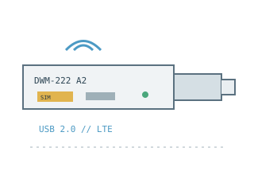

[ MODEL-SPECIFIC NETWORK HARDWARE ]
D-Link DWM-222 A2 LTE Cat 4 USB Adapter
Revision A2 cellular USB modem/adapter for LTE data service, a compatible SIM and a computer's USB 2.0 port; no separate battery or power brick.

EXACT MODEL / SKU: D-Link DWM-222 hardware revision A2, Australian datasheet variant. DWM-222/R and other revisions/regions can have different bands, firmware and included software.
Exact specifications and compatibility
| Model / SKU | D-Link DWM-222 A2, Australia-market revision. |
|---|---|
| Modem standard | LTE Category 4 USB cellular adapter, with UMTS/HSPA+ and GSM/GPRS/EDGE fallbacks supported by the regional configuration. |
| Interfaces | USB 2.0 Type-A host/data/power; 6-pin SIM slot and microSD card slot (up to 32GB per D-Link documentation); integrated antenna. |
| Downstream / upstream | LTE Cat 4 peak rate up to 150Mb/s downstream and 50Mb/s upstream. The AU A2 documentation lists LTE 800/1800/2600MHz; live rates depend on the provider's supported bands, signal and plan. |
| Telephone service | Mobile broadband data adapter only. Connection-manager SMS/phonebook functions, where available, are not voice telephony; no handset/analog telephone interface is specified. |
| Provider compatibility | Use an active SIM and APN for an operator that supports this Australian A2 radio-band profile and accepts the device. A carrier lock, network certification and SIM plan can block service even when LTE bands overlap. |
| Firmware / host compatibility | D-Link publishes software/support for the DWM-222 revision and region; match A2 exactly before installing firmware or connection-manager software. Host operating-system support varies by driver release; supported router USB ports are not guaranteed. |
| Power and safety | Powered from USB 2.0 (5V host bus); no external battery or adapter. Connect to a compliant port, avoid use in a confined hot enclosure, protect SIM/USB contacts from moisture and static, and eject/remove safely before transport. |
Model-specific notes
The listed AU revision A2 bands must not be generalized to all DWM-222 units. Cat 4 values describe peak radio limits, not a minimum provider speed.
Manufacturer specifications and manual
- D-Link DWM-222 official product specificationsManufacturer product description, functions and regional hardware caveats.
- D-Link DWM-222 A2 official data sheetManufacturer specification for A2 bands, rates, interfaces and host-power class.
- D-Link DWM-222 official support and downloadsManufacturer support page retains downloads for this discontinued product and its revisions.